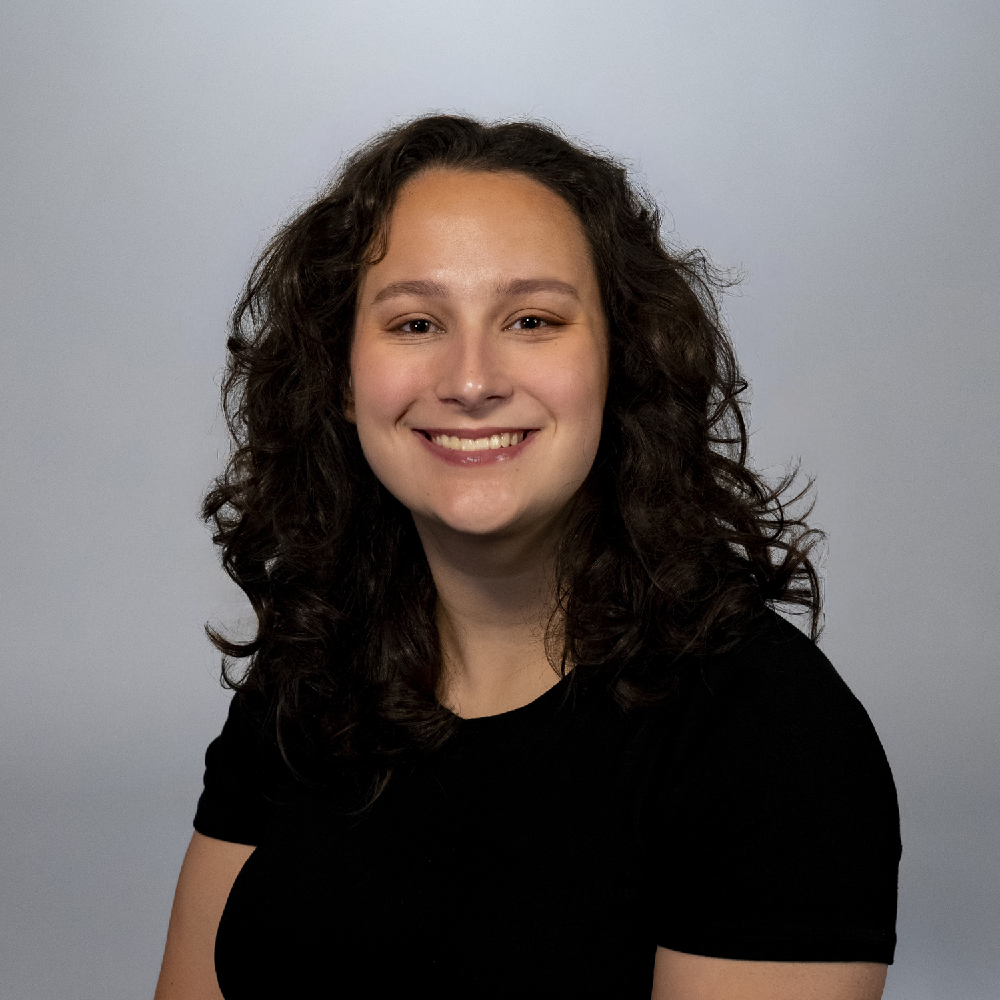

Who am I?I am a CS student and math minor at the University of Illinois, and I am going to be graduating Spring 2027! Outside of classes I am involved in Phi Sigma Rho, Girls Who Code, ands Women in Computer Science. My favorite things to learn within CS are Mathematics topics, proofs/logic, web development, and models of computation. Outside of CollegeI am an Illinois native from Normal, Il. I went to Normal West High School and I was heavily involved in both choir and computer science activities. Nowadays, I spend my time pretty similarly. Outside of computer science and classwork, I spend my time playing music, reading, playing card games, and knitting. CareerI have recently completed a summer internship at Morton Buildings, where I worked on various internal web applications. This emphasized furthed my passion for front-end application development, which I will want to continue learning more about. |
 |